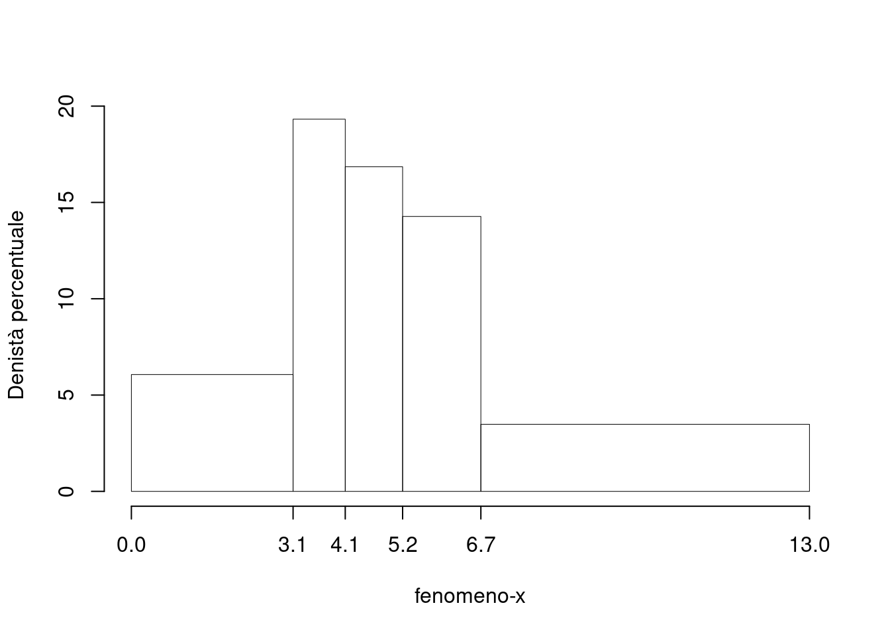
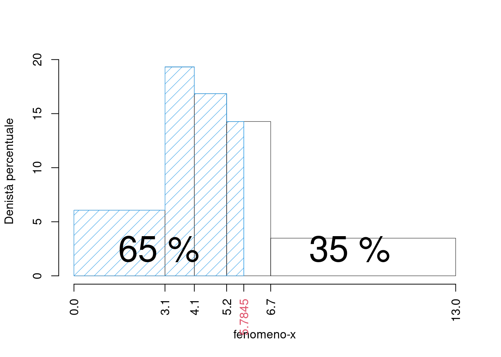
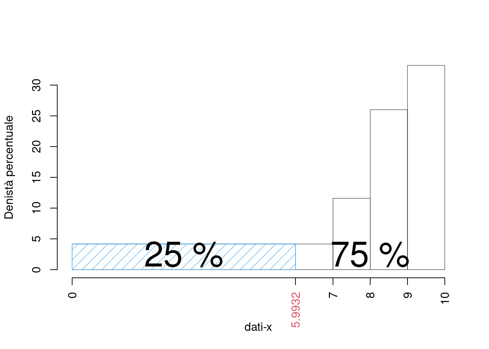
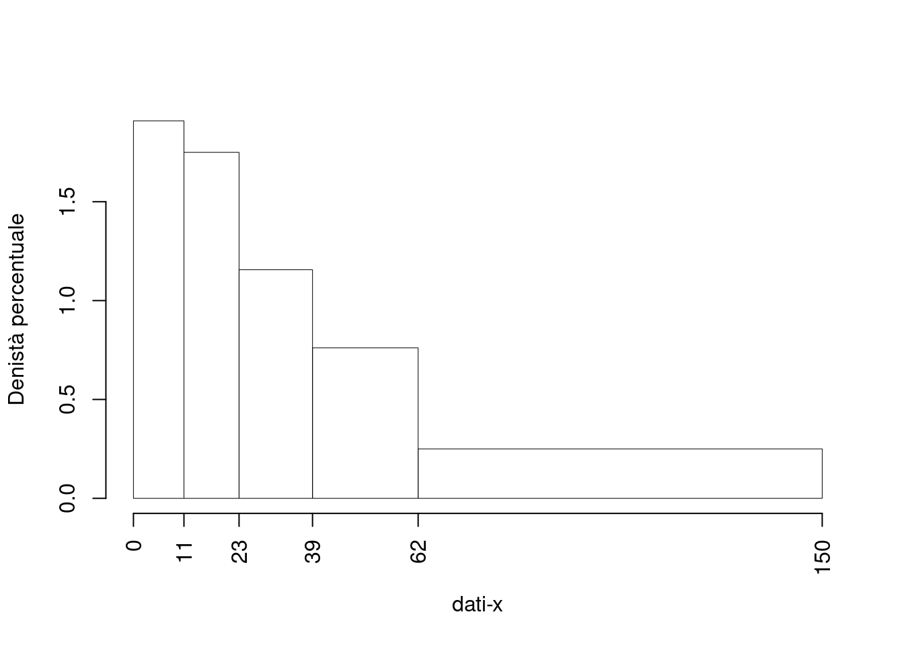
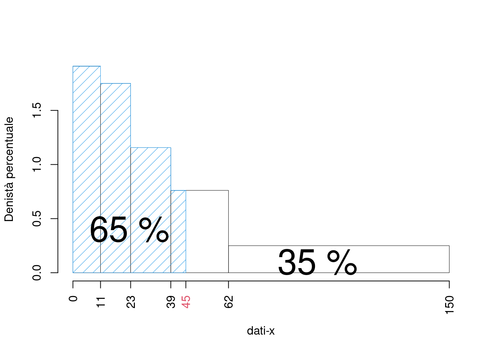
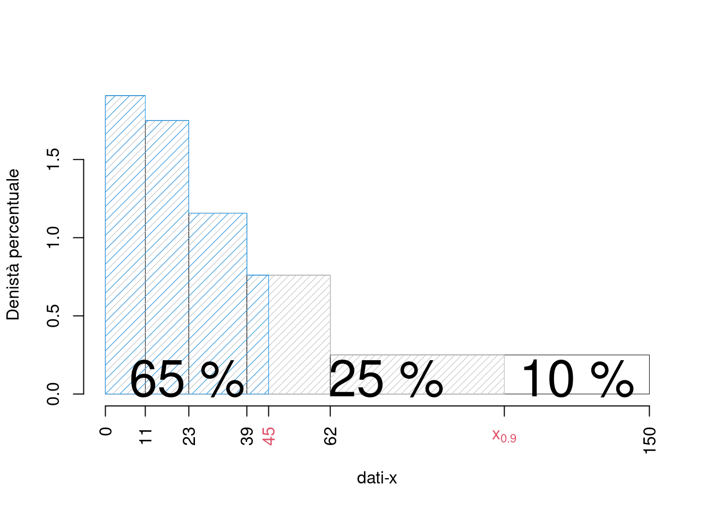
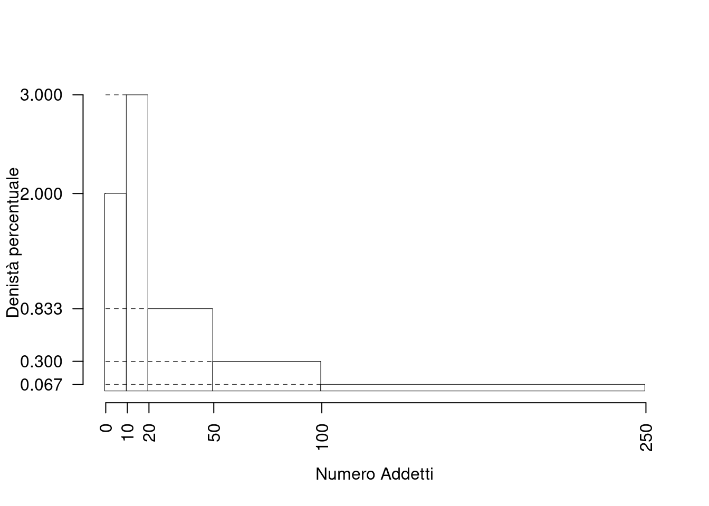
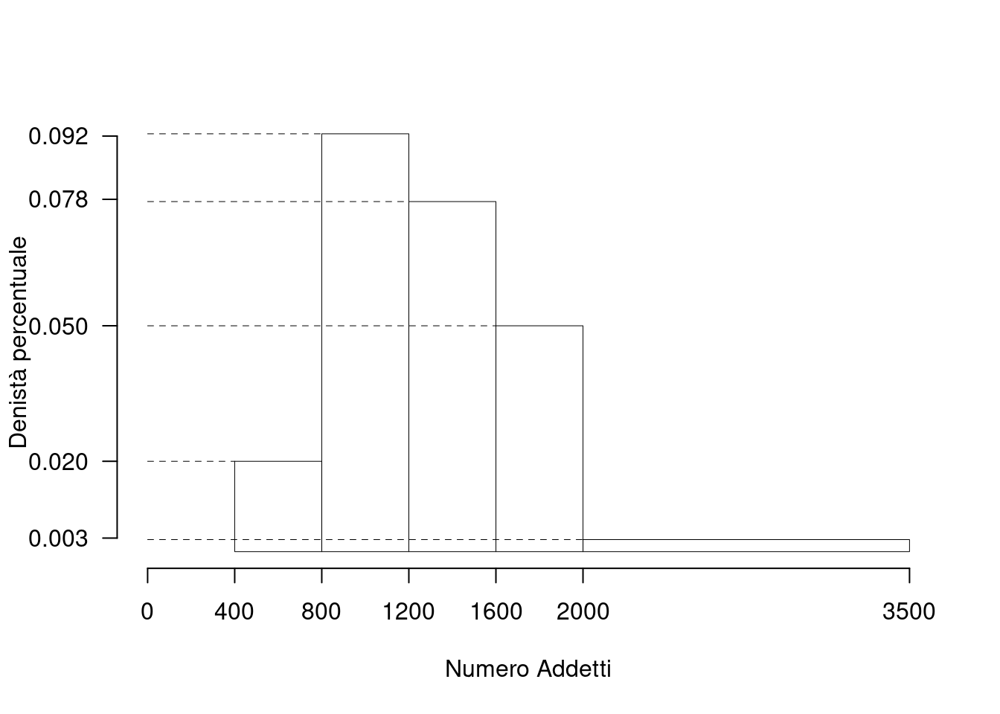

Esercizi di Statistica Descrittiva
Versione senza contesto
Variante A
Sono stati analizzati 383 individui per investigare su fenomeno-x. É riportata qui di seguito la distribuzione in classi espressa in frequenza relativa.
| \([\text{x}_j,\) | \(\text{x}_{j+1})\) | \(f_j\) |
|---|---|---|
| 0.0 | 3.1 | 0.1880 |
| 3.1 | 4.1 | 0.1932 |
| 4.1 | 5.2 | 0.1854 |
| 5.2 | 6.7 | 0.2141 |
| 6.7 | 13.0 | 0.2193 |
| 1.0000 |
NA. Disegnare l’istogramma di densità percentuale.
Ricordando che:
- \(n_j=f_j\cdot n\),
- \(b_j=x_{j+1}-x_{j}\),
- \(h_j=f_j/b_j\times 100\),
si consiglia di mettere i dati in tabella:
| \([\text{x}_j,\) | \(\text{x}_{j+1})\) | \(n_j\) | \(f_j\) | \(b_j\) | \(h_j\) | \(F_j\) |
|---|---|---|---|---|---|---|
| 0.0 | 3.1 | 72 | 0.1880 | 3.1 | 6.064 | 0.1880 |
| 3.1 | 4.1 | 74 | 0.1932 | 1.0 | 19.321 | 0.3812 |
| 4.1 | 5.2 | 71 | 0.1854 | 1.1 | 16.853 | 0.5666 |
| 5.2 | 6.7 | 82 | 0.2141 | 1.5 | 14.273 | 0.7807 |
| 6.7 | 13.0 | 84 | 0.2193 | 6.3 | 3.481 | 1.0000 |
| 383 | 1.0000 | 13.0 |

- calcolare il valore approssimato del percentile \(65\)-esimo, e tracciarlo nell’istogramma.
\[\begin{eqnarray*} p &=& 0.65 , \text{essendo }F_{ 4 }= 0.7807 > 0.65 \Rightarrow j_{ 0.65 }= 4 \\ x_{ 0.65 } &=& x_{\text{inf}; 4 } + \frac{ { 0.65 } - F_{ 3 }} {f_{ 4 }} \cdot b_{ 4 } \\ &=& 5.2 + \frac {{ 0.65 } - 0.5666 } { 0.2141 } \cdot 1.5 \\ &=& 5.784 \end{eqnarray*}\]

- Qual è il numero di individui con fenomeno-x superiore a 5.2?
\[\begin{eqnarray*} \#(X>5.2) &=& (f_4+f_5)\times n\\ &=& (0.2141+0.2141)\times 383\\ &=& 166,\text{ o alternativamente}\\ &=& (1-F_3)\times n\\ &=& (1-0.5666)\times 383\\ &=& 166 \end{eqnarray*}\]
- Analizzare la relazione tra media, mediana e moda alla luce del istogramma di densità.
È presente un’evidente asimmetria positiva (coda lunga a dx) e quindi
\[Moda>x_{0.5}>\bar x\]
Variante B
Sono stati analizzati 250 individui per investigare su dati-x. È riportata qui di seguito la distribuzione in classi espressa in frequenza assoluta.
| \([\text{x}_j,\) | \(\text{x}_{j+1})\) | \(n_j\) |
|---|---|---|
| 0 | 7 | 73 |
| 7 | 8 | 29 |
| 8 | 9 | 65 |
| 9 | 10 | 83 |
| 250 |
- Disegnare l’istogramma di densità percentuale.
Ricordando che:
- \(f_j=n_j/n\),
- \(b_j=x_{j+1}-x_{j}\),
- \(h_j=f_j/b_j\times 100\),
si consiglia di mettere i dati in tabella:
| \([\text{x}_j,\) | \(\text{x}_{j+1})\) | \(n_j\) | \(f_j\) | \(b_j\) | \(h_j\) | \(F_j\) |
|---|---|---|---|---|---|---|
| 0 | 7 | 73 | 0.292 | 7 | 4.171 | 0.292 |
| 7 | 8 | 29 | 0.116 | 1 | 11.600 | 0.408 |
| 8 | 9 | 65 | 0.260 | 1 | 26.000 | 0.668 |
| 9 | 10 | 83 | 0.332 | 1 | 33.200 | 1.000 |
| 250 | 1.000 | 10 |
- calcolare il valore approssimato del percentile \(25\)-esimo, e tracciarlo nell’istogramma.
\[\begin{eqnarray*} p &=& 0.25 , \text{essendo }F_{ 1 }= 0.292 > 0.25 \Rightarrow j_{ 0.25 }= 1 \\ x_{ 0.25 } &=& x_{\text{inf}; 1 } + \frac{ { 0.25 } - F_{ 0 }} {f_{ 1 }} \cdot b_{ 1 } \\ &=& 0 + \frac {{ 0.25 } - 0 } { 0.292 } \cdot 7 \\ &=& 5.993 \end{eqnarray*}\]

- Calcolare il numero di individui maggiori del 75-esimo percentile, \(x_{0.75}\)
Per definizione \[ \%(X\le x_{0.75})=75\% \] e quindi \[ \%(X> x_{0.75}) = 25% \] calcoliamo il 25% di \(n=250\) e otteniamo \[ \#(X>x_{0.75})=250\times 0.25=62.5 \]
- calcolare il valore approssimato della media aritmetica \(\bar x\) e della varianza \(\sigma^2\).
| \([\text{x}_j,\) | \(\text{x}_{j+1})\) | \(n_j\) | \(f_j\) | \(\bar{\text{x}}_j\) | \(\bar{\text{x}}_j^2\) |
|---|---|---|---|---|---|
| 0 | 7 | 73 | 0.292 | 3.5 | 12.25 |
| 7 | 8 | 29 | 0.116 | 7.5 | 56.25 |
| 8 | 9 | 65 | 0.260 | 8.5 | 72.25 |
| 9 | 10 | 83 | 0.332 | 9.5 | 90.25 |
| 250 | 1.000 |
e quindi \[ \bar x= \frac 1n\sum_{j=1}^k\bar x_jn_j=\frac{1814}{250}=7.256 \]
e quindi \[ \sigma^2= \frac 1n\sum_{j=1}^k\bar x_j^2n_j-\bar x^2=\frac{14712.5}{250}-(7.256)^2=6.2005 \]
Variante C
Sono stati analizzati 200 individui per investigare su dati-x. Sono noti i percentili \(x_{0.21}=11\), \(x_{0.42}=23\), \(x_{0.6}=39\), \(x_{0.78}=62\), il minimo è 0, il massimo è 150.
- Disegnare l’istogramma di densità percentuale.
Ricordando che:
- \(f_1=F_1\), \(f_2=F_2-F_1\),…,\(f_j = F_j-F_{j-1}\),
- \(b_j=x_{j+1}-x_{j}\),
- \(h_j=f_j/b_j\times 100\),
si consiglia di mettere i dati in tabella:
| \([\text{x}_j,\) | \(\text{x}_{j+1})\) | \(f_j\) | \(b_j\) | \(h_j\) | \(F_j\) |
|---|---|---|---|---|---|
| 0 | 11 | 0.210 | 11 | 1.9091 | 0.21 |
| 11 | 23 | 0.210 | 12 | 1.7500 | 0.42 |
| 23 | 39 | 0.185 | 16 | 1.1562 | 0.60 |
| 39 | 62 | 0.175 | 23 | 0.7609 | 0.78 |
| 62 | 150 | 0.220 | 88 | 0.2500 | 1.00 |
| 1.000 | 150 |
e infine disegnare il grafico

- Calcolare le frequenze assolute
Ricordando che: \[ n_j=f_j\times n \]
e mettendo in tabella, otteniamo
| \([\text{x}_j,\) | \(\text{x}_{j+1})\) | \(f_j\) | \(n_j\) |
|---|---|---|---|
| 0 | 11 | 0.210 | 42 |
| 11 | 23 | 0.210 | 42 |
| 23 | 39 | 0.185 | 37 |
| 39 | 62 | 0.175 | 35 |
| 62 | 150 | 0.220 | 44 |
| 1.000 | 200 |
- Calcolare la percentuale approssimata di individui con dati-x inferiore a 45
\[\begin{eqnarray*} \%(X<45) &\approx& \%(X<39)+(45-39)\times h_4\\ &=& F_3\times 100+(45-39)\times 0.7609\\ &=& 0.605\times 100 + 6\times 0.7609\\ &=& 65.0652\% \end{eqnarray*}\]
graficamente

- Calcolare la percentuale approssimata di individui con dati-x compresa tra 45 e il 90-esimo percentile, \(x_{0.90}\).
Per calcolare \[ \%(45< X < x_{0.90}) \] non c’è bisogno di calcolare \(x_{0.90}\), infatti dal punto precedente sappiamo che
\[\begin{eqnarray*} \%(X<45) &\approx& \%(X<39)+(45-39)\times h_4\\ &=& F_3+(45-39)\times 0.7609\\ &=& 0.605\times 100 + 6\times 0.7609\\ &=& 65.0652\% \end{eqnarray*}\] dalla teoria sappiamo che \[ \%(X<x_{0.90})=90\% \] e quindi \[\begin{eqnarray*} \%(45< X < x_{0.90}) &=& 90\%-65.0652\%\\ &=& 24.9348\% \end{eqnarray*}\]
graficamente

Varianti con contesto (eserciziario)
Esercizio: Conteggi
La figura seguente riporta l’istogramma relativo a un campione di 200 imprese classificate sulla base del numero di addetti secondo le classi: \(0-9\) addetti, \(10-19\) addetti, \(20-49\) addetti, \(50-99\) addetti, \(100-249\) addetti. Si noti che sull’asse delle ordinate è riportata la densità percentuale.
Si noti che, a causa dell’ampiezza della scala dei valori, i dettagli dell’istogramma non si leggono sul grafico e, pertanto, non sono stati riportati gli estremi delle classi sull’asse delle ascisse, \(X\), e i dati si evincono dal testo

Il testo fornisce una rappresentazione grafica. Per rispondere alle domande successive occorre partire dalla rappresentazione in una tabella di frequenze (relative o, come conviene in questo caso, percentuali). Si devono determinare, quindi, le aree dei rettangoli per ottenere le percentuali di unità statistiche contenute nelle varie classi. Si procede come segue:
| Area Classi disgiunte | Ampiezza Classi congiunte | \(\times\)densità | frequenze perc. |
|---|---|---|---|
| \(A( 0- 9)\) | \(=[ 9,5 -(-0,5)]\) | \(\times 2\) | \(= 20\%\) |
| \(A( 10- 19)\) | \(=[ 19,5 - 9,5)]\) | \(\times 3\) | \(= 30\%\) |
| \(A( 20- 49)\) | \(=[ 49,5 - 19,5)]\) | \(\times 0.833\) | \(= 25\%\) |
| \(A( 50- 99)\) | \(=[ 99,5 - 49,5)]\) | \(\times 0.3\) | \(= 15\%\) |
| \(A(100-249)\) | \(=[249,5 - 99,5)]\) | \(\times 0.066\) | \(= 10\%\) |
A questo punto è possibile costruire la tabella della distribuzione delle frequenze percentuali della \(X\), numero di addetti delle imprese.
| \([\text{x}_j,\) | \(\text{x}_{j+1})\) | \(n_j\) | \(f_j\) | \(b_j\) | \(h_j\) | \(F_j\) |
|---|---|---|---|---|---|---|
| -0.5 | 9.5 | 40 | 0.20 | 10 | 2.0000 | 0.20 |
| 9.5 | 19.5 | 60 | 0.30 | 10 | 3.0000 | 0.50 |
| 19.5 | 49.5 | 50 | 0.25 | 30 | 0.8333 | 0.75 |
| 49.5 | 99.5 | 30 | 0.15 | 50 | 0.3000 | 0.90 |
| 99.5 | 249.5 | 20 | 0.10 | 150 | 0.0667 | 1.00 |
La funzione di ripartizione è utile quando si devono determinare la mediana (o la classe che la contiene) e/o la classe che contiene un determinato percentile. Un’altra definizione di percentile, infatti, utilizza la funzione cumulata delle frequenze percentuali, \(F_{\%; j}\). Il percentile \(p\)-esimo è il “primo” valore della \(x\), indicato con \(x_{p}\), nel quale la \(F_{\%; j}(x_{p})\) è uguale o supera il \((100 \times p)\)%.
- Qual è l’intervallo con il maggior numero di imprese?
L’intervallo \([10;\ 19]\).
- Qual è il numero di imprese che hanno addetti nella classe \([0,\, 9]\)?
\(f\left( 0 \vdash 10 \right) = \frac{10 \,\times\, 2} {100}\ 200 = 40\) (circa).
- In quale classe si trova il 15\(^{o}\) percentile?
Il 15\(^{o}\) percentile si trova nella classe \([0;\, 9]\).
- Qual è l’intervallo che contiene la mediana?
Il 50% delle imprese è contenuto esattamente nelle prime due classi. La mediana si trova dunque tra la fine dell’intervallo \([10;\, 19]\) e l’inizio dell’intervallo \([20;\, 49]\). Si potrebbe, quindi, dire che la mediana è 20? No, perché non è noto come sono distribuite le imprese nella classe \([20;\, 49]\); infatti, ipoteticamente, tutte le imprese della classe potrebbero avere 49 addetti e, in tal caso la mediana sarebbe 49 o la media tra 49 e 19.
- In quale classe si trova il 75\(^{o}\) percentile?
Il 75\(^{o}\) percentile si trova nella classe \([50;\, 99]\).
NB: il 75% della frequenza cumulata si trova proprio nella terza classe \([20;\, 49]\); perciò un valore successivo potrebbe essere il 75\(^{o}\) percentile, per esempio 50. Non si sa, come già detto per la mediana, se tra i dati vi sia una impresa con 50 addetti e, dunque, si può solo dire che la classe contenente il 75\(^{o}\) percentile è la successiva.
- Quale relazione ci si deve attendere fra media e mediana per i dati proposti?
L’esame del grafico mostra che vi è una asimmetria a destra (o positiva); pertanto, risulta (media\(>\)mediana); infatti, in base ai dati dell’istogramma, eseguendo i calcoli si trova che \(\bar{x}=43\) e \(x_{0,5}=20\).
- Determinare il valore approssimato della mediana, assumendo la distribuzione uniforme dei casi contenuti nella classe che contiene la mediana.
\[\begin{eqnarray*} p &=& 0.5 , \text{essendo }F_{ 2 }= 0.5 > 0.5 \Rightarrow j_{ 0.5 }= 2 \\ x_{ 0.5 } &=& x_{\text{inf}; 2 } + \frac{ { 0.5 } - F_{ 1 }} {f_{ 2 }} \cdot b_{ 2 } \\ &=& 9.5 + \frac {{ 0.5 } - 0.2 } { 0.3 } \cdot 10 \\ &=& 19.5 \end{eqnarray*}\]
- Definizione formale di percentile.
Il \(p\)-esimo percentile (\(0 \le p\le 1\)) del carattere \(X\) è quel valore di \(X\), indicato con \(x_{p}\), tale che
\[\begin{eqnarray*} p &=& F(x_{p}) \\ p &=& A(X < x_{p}) \qquad \mbox{Area\ totale\ uguale\ 1} \\ p \times 100 &=& \%(X < x_{p}) \qquad \mbox{Area\ totale\ uguale\ 100} \end{eqnarray*}\]
Esercizio Dati Continui
L’istogramma seguente mostra la distribuzione per classi di cilindrata delle autovetture iscritte al Pubblico Registro Automobilistico (dati aggiornati al 31/12/99; fonte www.aci.it). Il numero di autovetture censite è pari a 32027945; ma, per comodità nei calcoli, il numero totale, \(n\), è stato posto pari a 3000. Sopra ogni rettangolo è indicato il valore delle densità di frequenza percentuale.

- Qual è la percentuale di autovetture comprese nella seconda classe?
La seconda classe ha ampiezza pari a \(1200 - 800 = 400\). La densità percentuale è pari a 0.0925 e, quindi, la percentuale di autoveicoli con cilindrata compresa in tale intervallo è \(0.0925 \times 400 = 37\%\).
- In quale classe cade la mediana?
La percentuale di autoveicoli nella prima classe è \(0.02 \,\times\, 400 = 8\%\). La percentuale di autoveicoli nella seconda classe è \(37\%\). La percentuale di autoveicoli nella terza classe è \(0.0775 \,\times\, 400 = 31\%\). Dal momento che \(8\% +37\% < 50\%\), mentre \(8\% +37\% +31\% > 50\%\), la mediana appartiene alla terza classe, ovvero è compresa fra 1200cc e 1600cc.
- Determinare il valore approssimato della mediana, assumendo la distribuzione uniforme dei casi contenuti nella classe che contiene la mediana.
Sia \(m\) il numero della classe contenente la mediana:
\[\begin{eqnarray*} p &=& 0.5 , \text{essendo }F_{ 3 }= 0.76 > 0.5 \Rightarrow j_{ 0.5 }= 3 \\ x_{ 0.5 } &=& x_{\text{inf}; 3 } + \frac{ { 0.5 } - F_{ 2 }} {f_{ 3 }} \cdot b_{ 3 } \\ &=& 1200 + \frac {{ 0.5 } - 0.45 } { 0.31 } \cdot 400 \\ &=& 1265 \end{eqnarray*}\]
- Qual è la “classe modale” ?
La “classe modale” è quella con la massima densità di frequenza (il rettangolo con l’altezza maggiore) e corrisponde alla classe 800–1200 con una percentuale (seconda classe) pari a \(37\%\). In questo caso è anche la classe con la percentuale di più alta; infatti, la percentuale di autoveicoli nella terza classe è \(0.0775 \,\times\, 400 = 31\%\). Le altre classi hanno una percentuale inferiore, come si può osservare considerando le unità di misura del grafico e i relativi valori.
- Giulio ha una macchina con cilindrata pari a 625cc. Indicare la risposta corretta:
- \(\Box \;\) l’auto di Giulio è molto potente, infatti meno del 9% delle auto ha cilindrata inferiore
- \(\Box \;\) l’auto di Giulio è molto potente, infatti più del 90% delle auto ha cilindrata inferiore
- \(\Box \;\) l’auto di Giulio è poco potente, infatti meno del 9% delle auto ha cilindrata inferiore
- \(\Box \;\) l’auto di Giulio è poco potente, infatti più del 9% delle auto ha cilindrata inferiore
l’auto di Giulio è poco potente, infatti meno del 9% delle auto ha cilindrata inferiore
Esercizio (variante 1)
La distribuzione delle frequenze assolute della cilindrata delle autovetture iscritte al Pubblico Registro Automobilistico (dati aggiornati al 31/12/99; fonte www.aci.it) è riportata nella tabella seguente. Il numero di autovetture censite, per comodità è stato posto pari a 3000 (decine di migliaia, si veda l’esercizio precedente).
| \([\text{x}_j,\) | \(\text{x}_{j+1})\) | \(n_j\) |
|---|---|---|
| 400 | 800 | 240 |
| 800 | 1200 | 1110 |
| 1200 | 1600 | 930 |
| 1600 | 2000 | 600 |
| 2000 | 3500 | 120 |
- Qual è la percentuale di autovetture comprese nella seconda classe?
\(f_{\%;\, 2} = 100 \,\times\, 1110/3000 = 37\%\).
- In quale classe cade la mediana?
Per individuare la classe che contiene la mediana, si cumulano le percentuali a partire dalla prima classe e ci si arresta appena si supera il 50%. Per completezza e comodità si riporta la seguente tabella che contiene le frequenze percentuali e le frequenze percentuali cumulate, \(F_{\%;\, j}\).
| \([\text{x}_j,\) | \(\text{x}_{j+1})\) | \(n_j\) | \(f_j\) | \(F_j\) |
|---|---|---|---|---|
| 400 | 800 | 240 | 0.08 | 0.08 |
| 800 | 1200 | 1110 | 0.37 | 0.45 |
| 1200 | 1600 | 930 | 0.31 | 0.76 |
| 1600 | 2000 | 600 | 0.20 | 0.96 |
| 2000 | 3500 | 120 | 0.04 | 1.00 |
La classe che contiene la mediana è 120-160 perché in questa la frequenza percentuale cumulata ha superato il 50%.
Si noti che un modo diverso di fornire i dati è riportare nel grafico: le densità percentuali, \(h_{\%;\, j}\), oppure le densità di frequenza relativa, \(h_{j}\); si ricordi che:
Si noti che in casi come questi, in cui si riportano le frequenze assolute, \(n_{j}\), occorre esaminare con attenzione la leggenda dell’asse delle ordinate perché può capitare che le \(n_{j}\) si riportino direttamente sull’asse delle ordinate.
Esercizio (variante 2)
La distribuzione delle frequenze relative della cilindrata delle autovetture iscritte al Pubblico Registro Automobilistico (dati aggiornati al 31/12/99; fonte www.aci.it) è riportata nella tabella seguente. Il numero di autovetture censite è pari a 320.27 centinaia di migliaia (\(10^{5}\)).
| \([\text{x}_j,\) | \(\text{x}_{j+1})\) | \(f_j\) |
|---|---|---|
| 400 | 800 | 0.08 |
| 800 | 1200 | 0.37 |
| 1200 | 1600 | 0.31 |
| 1600 | 2000 | 0.20 |
| 2000 | 3500 | 0.04 |
- Disegnare l’istogramma (delle densità relative) della distribuzione della cilindrata delle auto in circolazione.
Per disegnare l’istogramma occorrono le altezze, \(h_{i}\), dei rettangoli da disegnare per ogni classe: i calcoli sono riportati di séguito:
\[\begin{eqnarray*} h_{j} &=& \frac{f_{j}} {b_{j+1} - b_{j}} \\ h_{1} &=& \frac{0.08} { 800 - 400} = 0.0002 \\ h_{2} &=& \frac{0.37} {1200 - 800} = 0.000925 \\ h_{3} &=& \frac{0.31} {1600 - 1200} = 0.000775 \\ h_{4} &=& \frac{0.20} {2000 - 1600} = 0.000500 \\ h_{5} &=& \frac{0.04} {3500 - 2000} = 0.00002\bar{6} \, . \end{eqnarray*}\]
Queste sono le altezze per disegnare i rettangoli nel grafico sopra riportato.
Le altre domande possono essere simili alle precedenti.
Esercizio (variante 3)
L’esame della distribuzione della cilindrata delle autovetture iscritte al Pubblico Registro Automobilistico (dati aggiornati al 31/12/99; fonte www.aci.it) ha fornito i seguenti dati:
- l’\(8^{o}\) percentile è 800cc,
- il \(45^{o}\) percentile è 1200cc,
- il \(76^{o}\) percentile è 1600cc,
- il \(96^{o}\) percentile è 2000cc.
Il valore minino della cilindrata è 400cc e il valore massimo è 3500cc. Il numero di autovetture censite è pari a 3000 (dato di comodo, come detto in precedenza).
Si noti che nel compito di esame i percentili sono spesso espressi in simboli, come segue, dove, per semplificare, si sono omesse le unità di misura e altre indicazioni perché la corrispondenza tra i simboli e le espressioni verbali sembra ovvia:
- \(x_{0.08}= 800\),
- \(x_{0.45}= 1200\),
- \(x_{0.76}= 1600\),
- \(x_{0.96}= 2000\).
Il minimo e il massimo sono, rispettivamente, \(x_{\min}=\) 400 e \(x_{\max}= 3500\).
- Disegnare l’istogramma (delle densità percentuali) della distribuzione della cilindrata delle auto in circolazione.
Per disegnare l’istogramma occorrono le altezze, \(h_{j}\), dei rettangoli da disegnare per ogni classe. Per ottenere le altezze occorre determinare le percentuali di autovetture in circolazione che appartengono alle corrispondenti classi di cilindrata. I dati del problema forniscono tutti i percentili, dai quali si può ricavare le percentuali di ogni classe: perché si possa procedere compiutamente occorre conoscere il minimo e il massimo del carattere in oggetto.
- La prima classe va, dal minimo, \(x_{(1)}\), all’\(8^{o}\) percentile; ossia, è 400-800cc.
- La seconda classe va, dall’\(8^{o}\) percentile al \(45^{o}\) percentile; ossia, è 800-1200cc.
- La terza classe va, dal \(45^{o}\) percentile al \(76^{o}\) percentile; ossia, è 1200-1600cc.
- La quarta classe va, dal \(76^{o}\) percentile al \(96^{o}\) percentile; ossia, è 1600-2000cc.
- La quinta classe va, dal \(96^{o}\) percentile al massimo, \(x_{(n)}\);
- La settima classe va, dal \(99^{o}\) percentile al massimo, \(x_{(n)}\); ossia, è 2000-3500cc.
Per eseguire i calcoli si noti, poi, che il percentile rappresenta la percentuale cumulata dei soggetti; per conoscere, quindi, la percentuale di una classe occorre sottrarre al percentile “corrente” il valore di quello della classe precedente: \(\,\) oppure \(\,\) oppure ancora \(\,\). Le densità sono:
\[\begin{eqnarray*} h_{j} &=& \frac{100\ (F_{j} - F_{j-1})} {b_{j+1} - b_{j}} = \frac{f_{\%;\, j}} {b_{j+1} - b_{j}} \\ h_{\%;\, 1} &=& \frac{ 8 - 0} { 800 - 400} = 0.0200 \\ h_{\%;\, 2} &=& \frac{ 45 - 8} {1200 - 800} = 0.0925 \\ h_{\%;\, 3} &=& \frac{ 76 - 45} {1600 - 1200} = 0.0775 \\ h_{\%;\, 4} &=& \frac{ 96 - 76} {2000 - 1600} = 0.0500 \\ h_{\%;\, 5} &=& \frac{100 - 96} {3500 - 2000} = 0.002\bar{6} \, . \end{eqnarray*}\]
Queste sono le altezze per disegnare i rettangoli nel grafico sopra riportato. Si noti che nel calcolo delle percentuali di classe \(f_{0}=0\) e \(f_{J}=100\), dove \(J\) è l’indice dell’ultima classe e, quindi, il percentile di \(x_{(n)}\) (il massimo). In tabella:
| \([\text{x}_j,\) | \(\text{x}_{j+1})\) | \(F_j\) | \(f_j\) | \(b_j\) | \(h_j\) |
|---|---|---|---|---|---|
| 400 | 800 | 0.08 | 0.08 | 400 | 0.0200 |
| 800 | 1200 | 0.45 | 0.37 | 400 | 0.0925 |
| 1200 | 1600 | 0.76 | 0.31 | 400 | 0.0775 |
| 1600 | 2000 | 0.96 | 0.20 | 400 | 0.0500 |
| 2000 | 3500 | 1.00 | 0.04 | 1500 | 0.0027 |
e di cosegeunza otteniamo
Esercizio Dati non ordinati
Con riferimento a molti processi industriali, si usa il termine “Work-In-Process” (spesso abbreviato con WIP). Negli impianti di produzione dei libri, il WIP rappresenta il tempo necessario per piegare, riunire, cucire, e rilegare i fogli che provengono da una pressa. I dati che seguono sono relativi ai tempi di lavorazione (tempo, in giorni, che intercorre tra quando i libri vengono stampati e quando sono impacchettati nei cartoni) per due campioni di 20 libri estratti da due impianti di produzione (D. M. Levine et al., 2000, Business Statistics: A First Course, 2.nd Edition, Prentice-Hall. Tr. it. (2002), Statistica, Apogeo, Milano, p. 126).
| Impianto 1 | 5.62 | 5.29 | 16.25 | 10.92 | 11.46 | 21.62 | 8.45 | 8.58 | 5.41 | 11.42 |
| 11.62 | 7.29 | 7.50 | 7.96 | 4.42 | 10.50 | 7.58 | 9.29 | 7.54 | 8.92 | |
| Impianto 2 | 9.54 | 11.46 | 16.62 | 12.62 | 25.75 | 15.41 | 14.29 | 13.13 | 13.71 | 10.04 |
| 5.75 | 12.46 | 9.17 | 13.21 | 6.00 | 2.33 | 14.25 | 5.37 | 6.25 | 9.71 |
Determinare:
- il campo di variazione,
- la mediana,
- la media sapendo che la somma è pari a 187.64 per l’impianto A e 227.07 per l’impianto B.
Per rispondere alle tre domande conviene ordinare prima i dati, come riportato nella tabella seguente.
| Impianto 1 | 4.42 | 5.29 | 5.41 | 5.62 | 7.29 | 7.50 | 7.54 | 7.58 | 7.96 | 8.45 |
| 8.58 | 8.92 | 9.29 | 10.50 | 10.92 | 11.42 | 11.46 | 11.62 | 16.25 | 21.62 | |
| Impianto 2 | 2.33 | 5.37 | 5.75 | 6.00 | 6.25 | 9.17 | 9.54 | 9.71 | 10.04 | 11.46 |
| 12.46 | 12.62 | 13.13 | 13.21 | 13.71 | 14.25 | 14.29 | 15.41 | 16.62 | 25.75 |
Il campo di variazione è dato dalla differenza tra il massimo osservato e il minimo.
\[\begin{eqnarray*} \mbox{CdV}(A) &=& x_{A;\, (n)} - x_{A;\, (1)} = 21.62 - 4.42 = 17.2 \,. \\ \mbox{CdV}(B) &=& x_{B;\, (n)} - x_{B;\, (1)} = 25.75 - 2.33 = 23.42 \,. \end{eqnarray*}\]
Il campo di variazione dell’impianto A è più piccolo di quello di B. Se le distribuzioni dei due insiemi di dati sono simili, allora ciò comporta un minore variabilità dei dati (o della prestazione) dell’impianto A.
La mediana per un numero di osservazioni pari è data da:
\[\begin{eqnarray*} x_{A;\, 0.5} &=& \frac{1} {2}\ \left( x_{A;\, (n/2)} + x_{A;\, (n/2)+1} \right) = \frac{8.45 + 8.58} {2} = 8.515 \,. \\ x_{B;\, 0.5} &=& \frac{1} {2}\ \left( x_{B;\, (n/2)} + x_{B;\, (n/2)+1} \right) = \frac{11.46 + 12.46} {2} = 11.96 \,. \end{eqnarray*}\]
La mediana dell’impianto A è inferiore a quella dell’impianto B, che comporta presumibilmente una diversa dislocazione (o non sovrapponibilità) dei due istogrammi.
- La media è data da:
\[\begin{eqnarray*} \bar{x}_{A} &=& \frac{187.64} {20} = 9.38 \,. \\ \bar{x}_{B} &=& \frac{227.07} {20} = 11.35 \,. \end{eqnarray*}\]
Idem, come sopra: la media dell’impianto A è inferiore a quella dell’impianto B, che comporta una diversa dislocazione (o non sovrapponibilità) dei due istogrammi. Tale esito mostra anche che l’impianto A è pi'u efficiente dell’impianto B perché A produce in un tempo medio inferiore a quello di B.
- \(\,\)il primo quartile,
- \(\,\)il terzo quartile,
- \(\,\)la differenza interquartile.
Si ragiona sui dati ordinati sopra riportati.
- Il primo quartile è dato dal valore della \(X\) relativa al soggetto nella posizione successiva a \(\lfloor n\, p \rfloor = \lfloor 20 \,\times\, 0.25 \rfloor = 5\), ossia \(x_{A;\, 0.25} = x_{A;\ (\lfloor n\, p \rfloor + 1)} = x_{A;\ (6)} = \textbf{7.50}\) e \(x_{B;\, 0.25} = x_{B;\ (\lfloor n\, p \rfloor + 1)} = x_{B;\ (6)} = \textbf{9.17}\). Si noti che il simbolo \(\lfloor \cdot \rfloor\) indica la parte intera dell’argomento. Tale regola è una approssimazione, adottata per semplificare il procedimento; tuttavia, in questo caso, si può ottenere un risultato pi'u preciso. Si tratta, infatti, di un numero divisibile per 4; pertanto, il primo quartile sarà dato dalla media dei valori corrispondenti ai soggetti 5.o e 6.o in graduatoria in modo da avere a sinistra esattamente 5 soggetti (il 25%) e a destra 15 soggetti (il 75%):
\[\begin{eqnarray*} x_{A;\, 0.25} &=& \frac{1} {2}\ \left( x_{A;\, (n/4)} + x_{A;\, (n/4)+1} \right) = \frac{7.29 + 7.50} {2} = 7.395 \,. \\ x_{B;\, 0.25} &=& \frac{1} {2}\ \left( x_{B;\, (n/4)} + x_{B;\, (n/4)+1} \right) = \frac{6.25 + 9.17} {2} = 7.71 \,. \end{eqnarray*}\]
- Il terzo quartile è dato dal valore della \(X\) relativa al soggetto nella posizione successiva a \(\lfloor n\, p \rfloor = \lfloor 20 \,\times\, 0.75 \rfloor = 15\), ossia \(x_{A;\, 0.75} = x_{A;\ (\lfloor n\, p \rfloor + 1)} = x_{A;\ (16)} = \textbf{11.42}\) e \(x_{B;\, 0.75} = x_{B;\ (\lfloor n\, p \rfloor + 1)} = x_{B;\ (16)} = \textbf{14.25}\). L’approssimazione è stata adottata, come già detto, per semplificare il procedimento, ma, in questo caso, si può ottenere un risultato pi'u preciso perché si tratta di un numero divisibile per 4; pertanto, il terzo quartile sarà dato dalla media dei valori corrispondenti ai soggetti 15.o e 16.o in graduatoria in modo da avere a sinistra esattamente 15 soggetti (il 75%) e a destra 5 soggetti (il 15%):
\[\begin{eqnarray*} x_{A;\, 0.75} &=& \frac{1} {2}\ \left( x_{A;\, (3n/4)} + x_{A;\, (3n/4)+1} \right) = \frac{10.92 + 11.42} {2} = 11.17 \,. \\ x_{B;\, 0.75} &=& \frac{1} {2}\ \left( x_{B;\, (3n/4)} + x_{B;\, (3n/4)+1} \right) = \frac{13.71 + 14.25} {2} = 13.98 \,. \end{eqnarray*}\]
- La differenza interquartile è data da:
\[\begin{eqnarray*} DI_{A} &=& x_{A;\, 0.75} - x_{A;\, 0.25} = 11.17 - 7.395 = 3.775 \,. \\ DI_{B} &=& x_{B;\, 0.75} - x_{B;\, 0.25} = 13.98 - 7.71 = 6.27 \,. \end{eqnarray*}\]
- Calcolare la varianza, sapendo che \(\sum_{i=1}^{20} x_{A;\, i}^{2} = 2064.08\) e \(\sum_{i=1}^{20} x_{B;\, i}^{2} = 3077.31\).
- Calcolare la deviazione standard.
- Per determinare la varianza, che è il quadrato della deviazione standard, si utilizza la formula che consente di ridurre gli errori di arrotondamento.
\[\begin{eqnarray*} \sigma_{A}^{2} &=& \frac{1} {n}\ \sum_{i=1}^{n} x_{i}^{2} - \bar{x}^{2} = \frac{1} {20}\ 2064.08 - (9.38)^{2} = 15.18 \,. \\ \sigma_{B}^{2} &=& \frac{1} {n}\ \sum_{i=1}^{n} x_{i}^{2} - \bar{x}^{2} = \frac{1} {20}\ 3077.31 - (11.35)^{2} = 24.96 \,. \end{eqnarray*}\]
- Per la deviazione standard si ha:
\[\begin{eqnarray*} \sigma_{A} &=& \sqrt{ \frac{1} {n}\ \sum_{i=1}^{n} x_{i}^{2} - \bar{x}^{2} } = \sqrt{ \frac{1} {20}\ 2064.08 - (9.38)^{2} } = 3.90 \,. \\ \sigma_{B} &=& \sqrt{ \frac{1} {n}\ \sum_{i=1}^{n} x_{i}^{2} - \bar{x}^{2} } = \sqrt{ \frac{1} {20}\ 3077.31 - (11.35)^{2} } = 5.00 \,. \end{eqnarray*}\]
Idem, come sopra: la variabilità dei dati dell’impianto A è inferiore a quella dell’impianto B, che comporta una maggiore concentrazione dell’istogramma rafforzando le differenze (tra i due impianti) già evidenziate.
- La distribuzione è asimmetrica? Se sì, di quale tipo di asimmetria si tratta?
- Dalle risposte date, emergono differenze tra i due impianti?
- La distribuzione dell’impianto A presenta una pronunciata asimmetria a destra (obliqua a destra o positiva), mentre quella dell’impianto B una minore asimmetria a sinistra (obliqua a sinistra o negativa). Per verificare numericamente questa affermazione si devono confrontare le media e la mediana:
\[\begin{eqnarray*} x_{A;\, 0.5} &=& 8.515\ <\ \bar{x}_{A}= 9.38 \quad\Rightarrow\quad \mbox{obliqua (o asimmetrica) a destra} \\ x_{B;\, 0.5} &=& 11.96\ >\ \bar{x}_{B}= 11.35 \quad\Rightarrow\quad \mbox{obliqua (o asimmetrica) a sinistra}\, . \end{eqnarray*}\]
Si noti, tuttavia, che l’asimmetria a sinistra è poco evidente perché lo scarto tra i due valori è solo di circa mezzo decimo dell’unità, equivalente a circa il 5% del valore della media.
- Dalle risposte date si evincono alcune differenze:
- la media dell’impianto A è inferiore di circa 2 punti;
- la variabilità dell’impianto A è inferiore di quella di B;
- l’asimmetria dell’impianto A è più pronunciata di quella di B.
Si può concludere che l’impianto A è più efficiente dell’impianto B di circa due giorni e risulta anche più “costante” nella produzione perché il tempo di produzione presenta una variabilità inferiore.